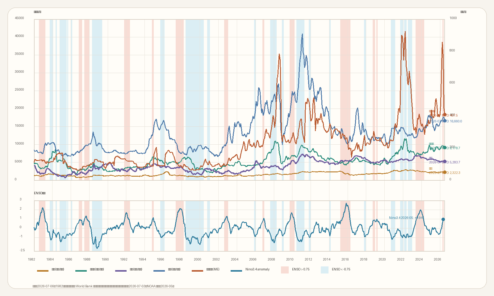

Natural Rubber Source Data Terminal
厄尔尼诺及天胶跟踪专题
天气、现货、库存、贸易流与跨品种气候信号。
输入密码后刷新云端
Cross Commodity Climate Map
中国内盘农产品 + 国际尿素 + 厄尔尼诺指数
读取最新底稿中...

Nino3.4 官方月频
未发布月份不补 0
上图默认使用相对指数视图，1982 年起展示；国内期货上市前使用现货代理折算，上市后切换国内连续期货。下图单独显示 Nino3.4。
数据来源：1982 年起长周期采用 World Bank Pink Sheet 玉米、棕榈油、世界糖价、RSS3 橡胶现货代理，并按首个可用国内期货月缩放；期货上市后切换 ChoiceAPI / Sina 国内连续合约。尿素使用 Investing.com 中东 FOB 期货与 World Bank，ENSO 使用 NOAA CPC Niño3.4。
边际情况
请输入密码查看边际情况。
Origin Weight
泰国天然橡胶产区权重
来源：OAE
口径：分府产量
等待数据
全国总产量
--
最大区域权重
--
同比变化
--
口径 / 解读
数据来源：Thailand Office of Agricultural Economics（OAE）2025 年天然橡胶产量预测文件；更新频率：年度/官方文件发布时更新，本站每日校验源文件变动。
观察提示
- OAE 2025 文件给出全国和四大区域预测口径，不提供分府排名，因此这里不再保留分府模板表。
- 这组数据用于判断年度供给重心，高频报价仍放在 THAINR 和 RAOT 模块里单独看。
Climate Driver
厄尔尼诺指标跟踪
来源：NOAA/CPC · IRI/Columbia
等待官方数据刷新
CPC 状态
--
--
El Niño 形成概率
--
NOAA/CPC 近期季节窗口
最新周 Niño3.4
--
Diagnostic Discussion 披露值
IRI 更新日期
--
Quick Look / Technical Update
NOAA/CPC 官方概率表
ENSO Diagnostic Discussion · 月度官方定性与概率
正在读取 NOAA/CPC 官方诊断摘要。
IRI/Columbia 半月更新
Quick Look · Technical Update · 概率分布
正在读取 IRI Quick Look 摘要。
CPC / IRI 数据口径
数据来源：NOAA/CPC ENSO Diagnostic Discussion 官方概率表、IRI/Columbia Quick Look 与 Technical Update；更新频率：CPC 月度，IRI 通常半月更新且发布时间常晚于 CPC 数日。
周度耦合跟踪
提取 NOAA/CPC 最新文字诊断，随官方更新自动刷新正在读取最新周度 Niño3.4 披露值。
观察暖水储备向东传播
低层/高层西风异常协同验证
周度耦合数据口径
数据来源：NOAA/CPC ENSO Update 与 Diagnostic Discussion 文字披露；更新频率：周度/随 CPC 官方页面更新，本站定时抓取并提取 Niño3.4、次表层暖水与风场耦合描述。
印度洋偶极子 IOD
BoM 周频 DMI + JMA 月频确认 + IRI/NMME 预测历史变化：BoM 周频 DMI
近 3 年周度序列，阈值带为 ±0.4°C
正在读取 IOD 周频数据。
历史灾害锚点
历史上，强 El Niño 与正 IOD 同期并不常见，但一旦共振，影响往往跨越农业、渔业与公共安全。1972 年印度季风偏弱、Sahel 旱灾饥荒，秘鲁鳀鱼崩塌并放大全球饲料链压力；1982-83 年秘鲁、厄瓜多尔洪水滑坡与澳洲、印尼、非洲干旱山火并发；1997-98 年印尼林火烟霾、东非和秘鲁洪灾同现，全球死亡和经济损失均显著上升。
资料来源：NOAA / NASA / BoM / JMA / PMEL；灾害影响为多因子结果。IOD 数据口径
数据来源：BoM 周频 Dipole Mode Index（DMI）为当前主指标；JMA 月频 DMI 和 3个月均值用于确认持续性；IRI/Columbia CCSR NMME 用于未来几个月正/中性/负 IOD 概率展望。
区域：印尼 / 泰国 / 印度
频率：日度聚合至周度/月度
信号：干旱 / 正常 / 潮湿
来源：Open-Meteo 网格降雨
降雨量化口径
数据来源：Open-Meteo 网格降雨与预报数据，按印尼、泰国、印度重点产区做省区/站点口径聚合；更新频率：日度自动更新，日度数据滚动汇总至周度、月度与未来预测。
Moisture / Temperature Snapshots
东南亚 / 全球土壤湿度与温度距平

东南亚局部：CPC 当前墒情距平从 CPC 当前状态图裁剪；有效日：最新。

东南亚局部：CPC 当前温度距平从 CPC 当前状态图裁剪；有效日：最新。

CPC 全球当前土壤湿度距平当前状态图，来源：NOAA CPC；有效日：最新。

CPC 全球当前 2m 温度距平当前状态图，来源：NOAA CPC；有效日：最新。
天气图口径
数据来源：NOAA CPC 当前陆面状态图；更新频率：随每日任务自动拉取。此处只保留土壤湿度距平与温度距平，用于观察主产区偏湿、偏干与热量背景。
交易解读
观察提示
- 优先比较三国最近 4 周累计雨量、历史分位和未来 14 天预报扰动。
- 若某国降雨转为潮湿且干扰雨日偏多，通常意味着割胶窗口收窄；若转为干旱，短期割胶较顺但需观察树体压力。
High Frequency Spot
泰国胶水现货（泰铢/kg）
来源：泰国 Songkhla CRM
品类：胶水现货
单位：THB/kg
口径 / 解读
数据来源：泰国 Songkhla CRM / THAINR 胶水现货报价；更新频率：交易日/工作日高频跟踪，本站每日自动校验并保留多年同期对照。
观察提示
- 优先关注本年曲线相对历史同期的偏离幅度，而不是单日波动。
- 若泰国现货领先国内外盘面走强，通常意味着现货补库或天气扰动先于期货定价反映。
Trade Flow Radar
天然橡胶贸易流验证
口径：泰国MOC天然橡胶
指标：数量 + 隐含均价
来源：Thailand MOC OpenData
研究含义
等待贸易流数据
用主产国出口和消费国进口，验证产区天气、现货和成交变化是否真正进入跨境贸易。
泰国出口量月度对照
2026实际 · 近五年均值 · 近五年区间泰国出口均价月度对照
2026实际 · 近五年均值 · 近五年区间今年出口量低于近五年同月区间、均价仍高于均值时，说明供给扰动有进入外流环节的可能。
官方接口未发布月份不进入图表，避免把未来或空值误读成贸易量归零。
贸易流不单独给方向，用来确认天气和泰国现货变化是否进入真实跨境外流。
口径 / 解读
数据来源：Thailand MOC OpenData；口径：泰国MOC天然橡胶商品口径；指标只展示数量与隐含均价，未发布月份不补0。
观察提示
- 当前主图只放已接入的 2026 官方月频，不再把 2023/2024 年度数据作为主信号。
- 先看泰国出口量是否低于历史同月区间，再看均价是否仍高于历史均值。
- 后续其他国家月频源接通后再加入同一套 2026 vs 历史同期框架。
Inventory Radar
国内库存压力雷达
来源：上期所 / 能源中心
口径：RU仓单季节性 + 青岛社会库存
频率：日频 / 周频
数据来源：上期所/能源中心仓单日报；更新频率：交易日日频；主图按 ISO 周对齐。
青岛/社会库存跟踪
周频公开口径| 日期 | 青岛合计 | 保税区 | 一般贸易 | 中国社会库存 | 信号 |
|---|
数据源状态
接入与更新频率口径 / 解读
数据来源：上期所/能源中心仓单日报、隆众资讯公开转载口径、站内行情 JSON；更新频率：仓单交易日日频，青岛/社会库存周频。
观察提示
- 先看 RU 仓单同周分位，再看近4周变化，最后用泰国天气、泰国现货和 RU/NR 盘面反馈确认。
- 低分位去库叠加主产区扰动，通常提升供给收紧向盘面传导的概率。
- 社会库存接入后将与官方仓单合成总库存压力，避免只看可交割仓单造成偏差。
Price & Volume
RAOT 周K线与成交量
RAOT 观察品种
加载品种视角中...
产品解读 形态： 加载中... / 角色： 加载中... / 信号： 加载中...
口径 / 解读
数据来源：RAOT 公开周度价格与成交结算量；更新频率：周度完整周更新，本站每日校验最新完整周并同步刷新周K与成交量图。
观察提示
- 放量突破更有参考意义，缩量新高则更偏向情绪推动。
- 均线系统更适合做节奏判断，仍需和现货端数据交叉验证。
Product Seasonality
RAOT 多品种季节性快览
来源：RAOT
口径：周均价
单位：THB/kg
RSS3 烟片胶
标准品定价对照
USS 生胶片
初加工传导观察
杯凝胶 CupLump
原料底部节奏
胶水 FieldLatex
源头现货张力
内盘期货 RU连续
盘面反馈季节性验证
数据来源：ChoiceAPI 国内连续合约日线底稿；更新频率：交易日日频，按周度重建季节性。
口径 / 解读
数据来源：RAOT 多品种周均价；更新频率：周度完整周更新，本站每日校验最新完整周，按同一日历周进行多年季节性对照。
观察提示
- 这里把 RSS3、USS、杯凝胶固定展开，避免来回切换 K 线或单一品种视角。
- 更适合看“当前完整周”相对历史同期的位置，作为 K 线之外的节奏补充。
Volume Seasonality
RAOT 成交结算量季节性对照
口径 / 解读
数据来源：RAOT 成交结算量字段；更新频率：周度完整周更新，本站每日校验并按同周历史均值/季节性位置比较。
观察提示
- 这里是 RAOT 表内的成交结算量字段，不是单一市场成交量。
- 如果价格走强但成交量弱于历史同期，通常说明报价抬升快于真实成交放大，信号质量要更谨慎看待。
Supply Floor
科特迪瓦底价
来源口径：APROMAC
品类：科特迪瓦指导收购价
单位：FCFA/kg
频率：月度
更新：通常当月 1-5 号，本站 1-7 号每日补抓
口径 / 解读
数据来源：APROMAC 科特迪瓦指导收购价；更新频率：月度，通常当月 1-5 日发布，本站每月 1-7 日每日补抓，月内未发布则沿用上一期。
观察提示
- 这组数据更适合观察供给侧成本中枢，而不是交易性高频择时。
- 若当年底价曲线持续高于历史区间，通常意味着全球供给成本的底部正在抬升。